陳杰龍的筆記網站
陳杰龍的筆記網站 主頁
主頁 歸檔
歸檔 分類
分類 其他
其他 關於我
關於我 How to Install Linux for Beginners
How to Install Linux for Beginners
1.下載Linux的ISO檔案
進入Ubuntu的官方網站下載ISO檔案選擇右下角Download
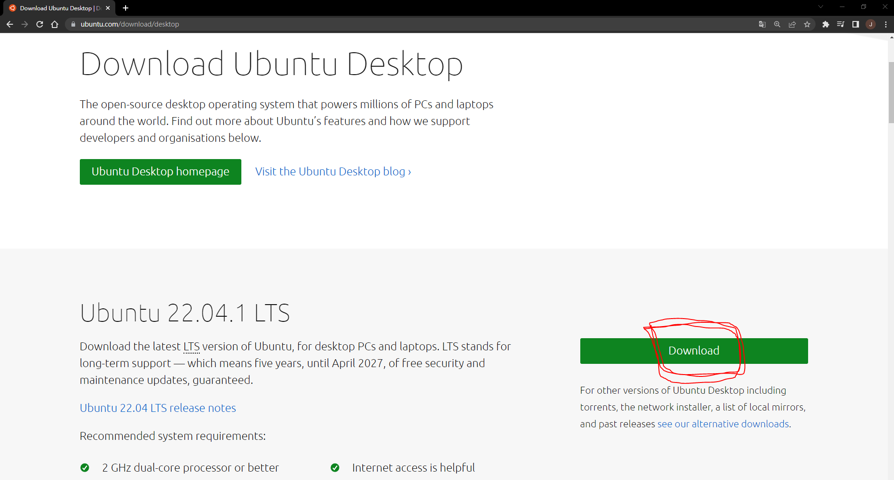
2.製作USB開機隨身碟&下載虛擬機
製作USB開機隨身碟
準備一隻 4GB 以上的隨身碟，透過 Rufus 軟體前往 Rufus 官方網站，並下載 Rufus 軟體
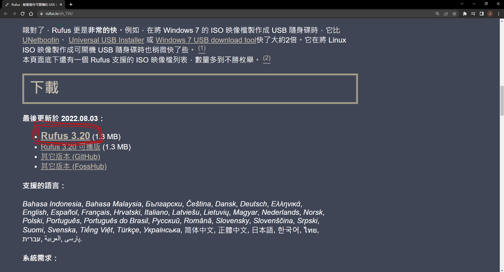
打開 Rufus 軟體，並接上 USB 隨身碟，確認 Rufus 介面上有讀取到你的隨身碟，就可以選擇剛剛所下載的 Ubuntu 安裝檔案，最後按下「執行」按鈕。
USB 隨身碟上的資料都會清空並刪除(格式化)，如果隨身碟內有重要資料，請記得先備份喔！
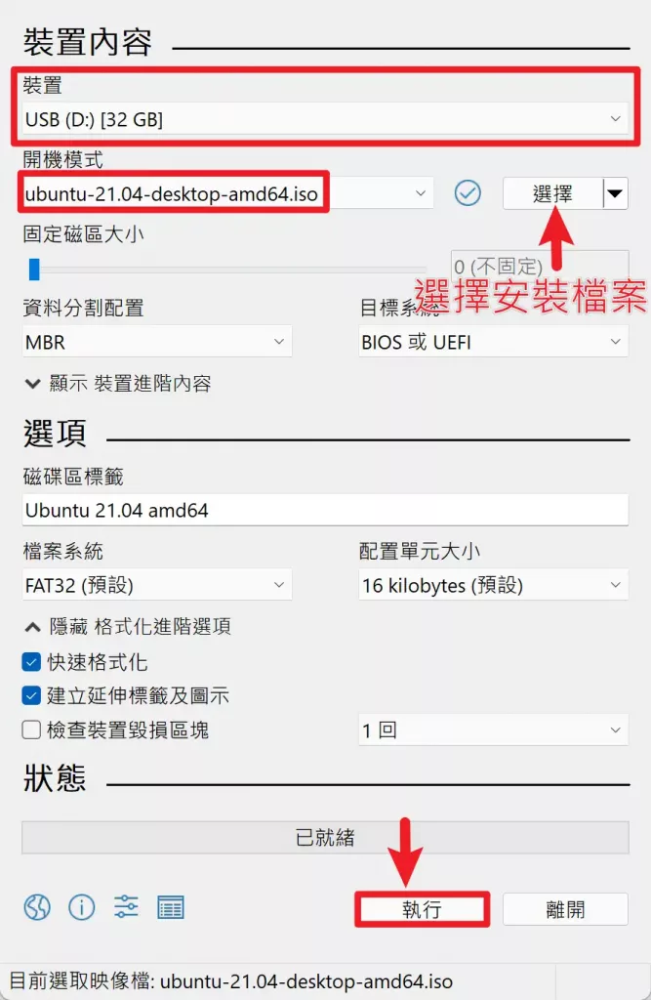
當 Rufus 製作完成後，確認 USB 隨身碟內有 Ubuntu 安裝的相關檔案。
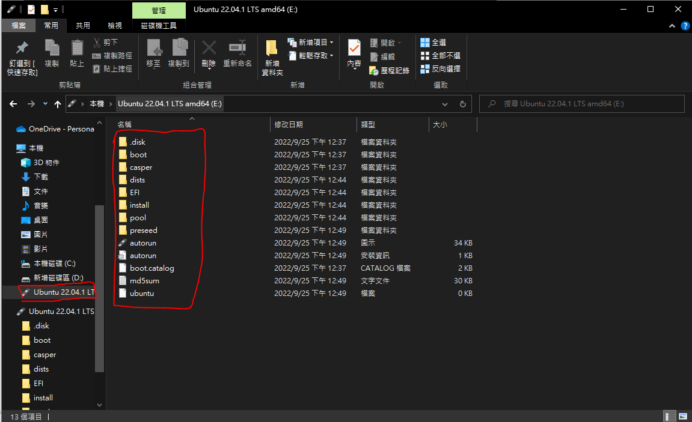
接著接上隨身碟並開機，開機的時候連續按各廠牌的「開機選單按鍵」，之後選擇相對應的 USB 隨身碟就可以進行隨身碟開機，選擇Ubuntu進入安裝介面
下載 VirtualBox
進入VirtualBox官方網站選擇對應的平台並下載
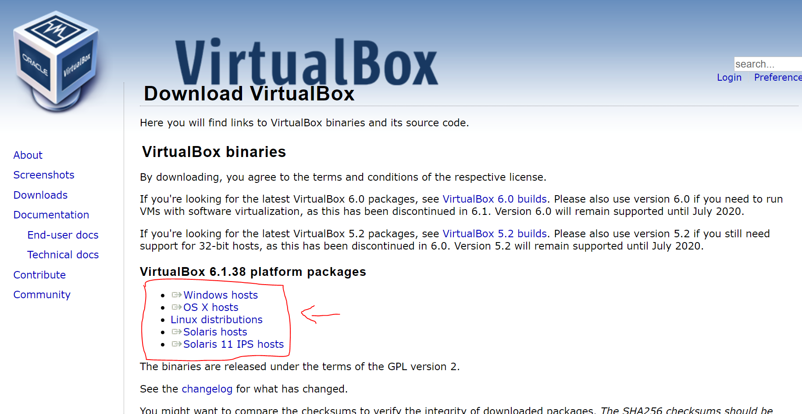
下載 VMware
進入VMware官方網站選擇對應的平台並下載
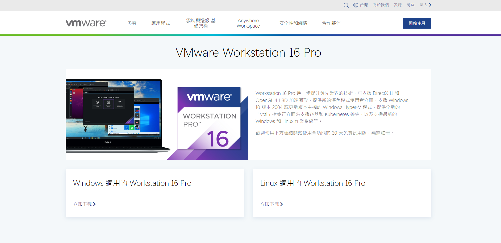
3.安裝系統
電腦
接著接上隨身碟並開機，開機的時候連續按各廠牌的「開機選單按鍵」，之後選擇相對應的 USB 隨身碟就可以進行隨身碟開機，選擇Ubuntu進入安裝介面虛擬機
這邊拿VMware做範例，內容大同小異進入VMware -> File -> New Virtual Machine
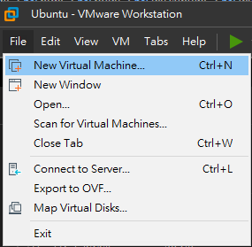
這邊選擇Typical (Custom可設置個人化的設定達到一些特別用途的虛擬機)
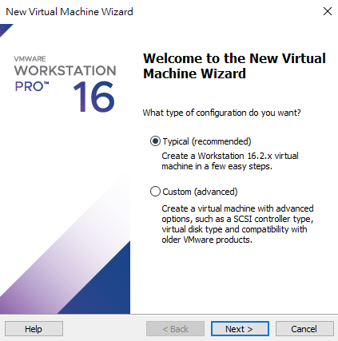
下一步 -> 選擇你剛剛下載的ISO檔
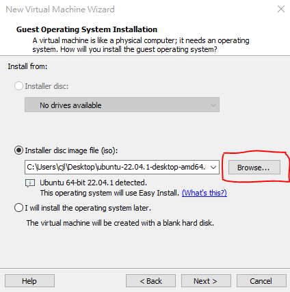
下一步 -> 填寫資料

下一步 -> 填寫虛擬機名稱(上)與檔案位置(下)
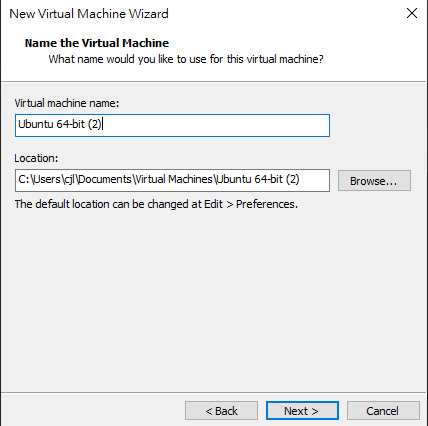
下一步 -> 配置虛擬機硬碟容量 -> Finish
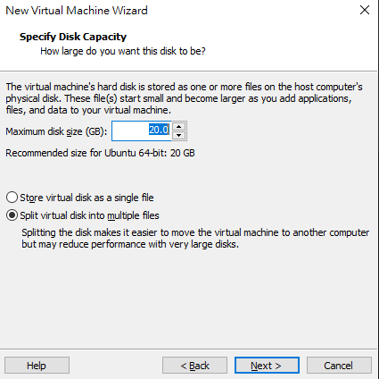
看到此畫面表示已經安裝成功了!
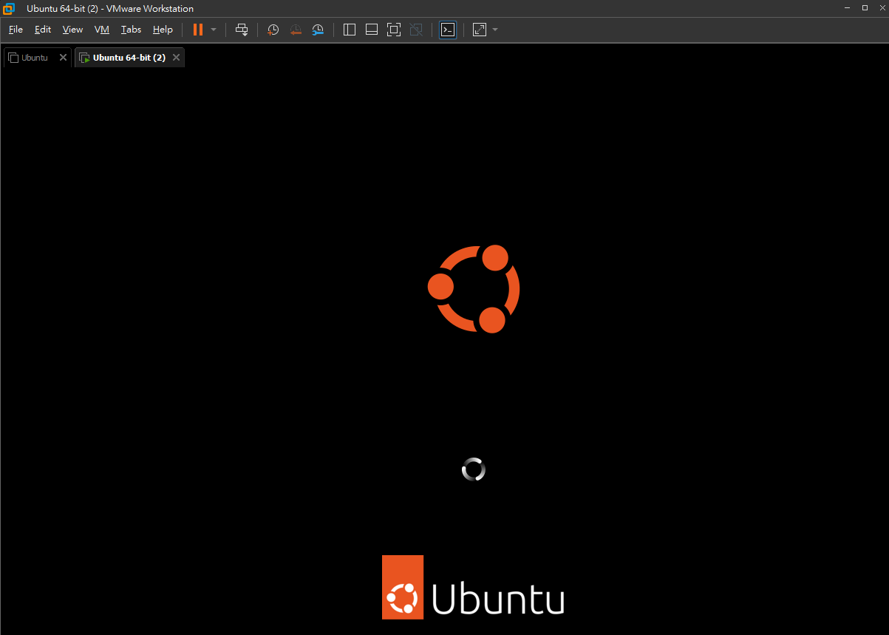
4.環境設置
點選Continue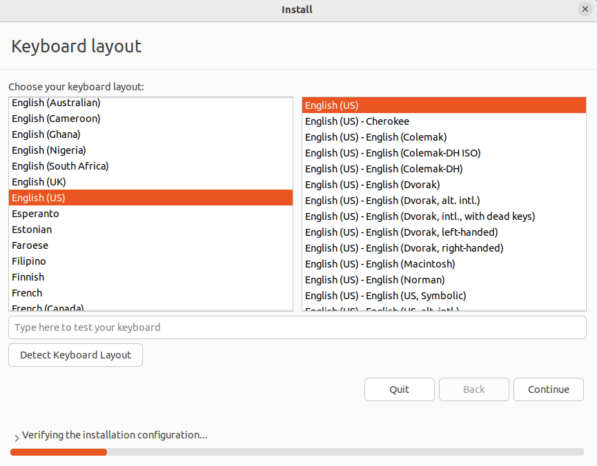
點選Continue
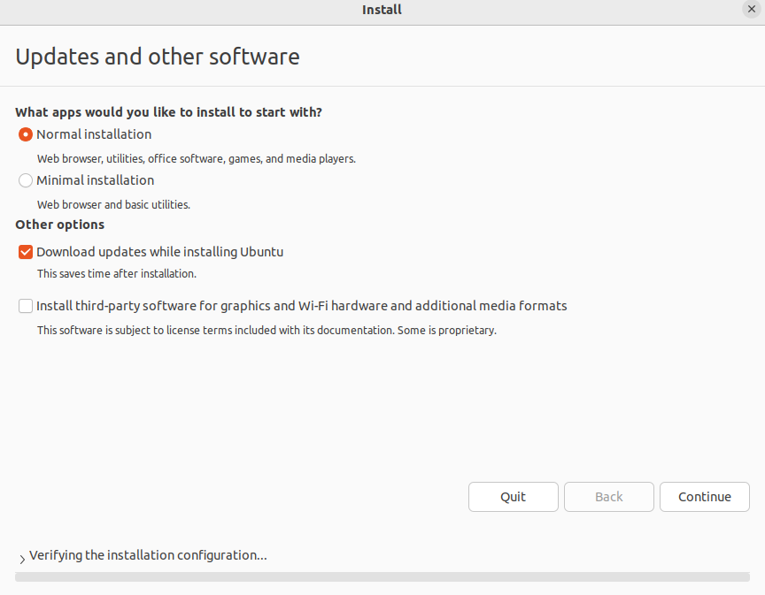
上面選項會清除硬碟所有資料並安裝Ubantu
下面可自行選擇
我這邊是虛擬機所以無資料可以直接選擇第一個選項
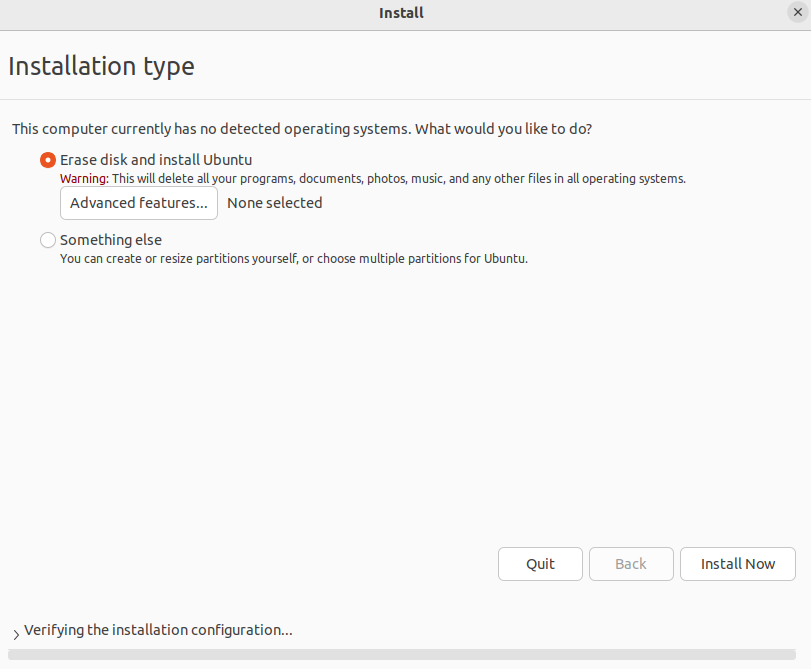
選擇國家
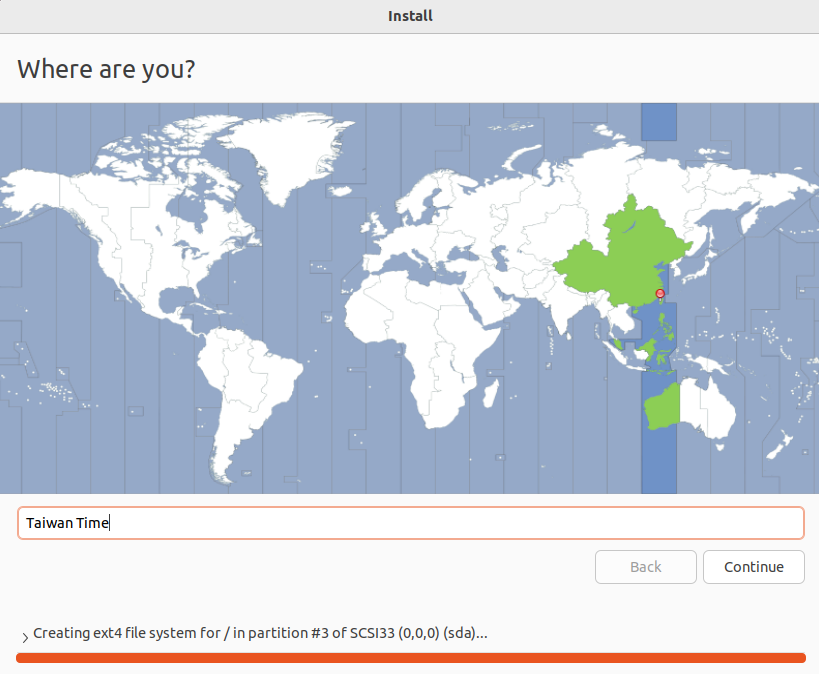
輸入用戶資料

看到此通知表示系統已經安裝完成，只需重新啟動即可
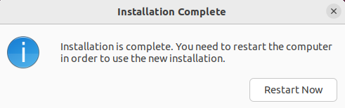
這樣就完成了Linux的安裝~!